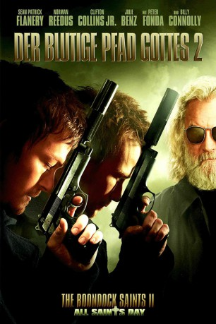

gesehen am 09.03.2015
gesehen am 09.03.2015Alternativ: The Boondock Saints II: All Saints Day gesehen am 09.03.2015
 
 IMDB-Wertung: 6.3 / 10
IMDB-Wertung: 6.3 / 10  Metascore:
Metascore: 
Die beiden MacManus-Brüder halten sich mit ihrem Vater, Il Duce, in den tiefen Tälern Irlands versteckt, weitab von ihrer früheren Existenz als Selbstjustiz ausübende Rächer. Als ihnen zu Ohren kommt, dass ein geliebter Priester von dunklen Kräften innerhalb der Mafia umgebracht worden ist, kehren die Brüder nach Boston zurück, um gewaltsam und blutig die Mörder zur Verantwortung zu ziehen. Mit einem neuen Komplizen und einer sexy FBI-Agentin heften sie sich an ihre Fersen.
Jahr: 2009
Dauer: 118 Minuten
FSK: Not Rated
Land: USA Studio: ApparitionTonspuren: DTS - ,
Untertitel: Deutsch,
Auflösung: 1080p (1920x816) Größe: 6727 MB
Genre: Action, Krimi, Thriller
Regisseur: Troy Duffy
Drehbuch: Troy Duffy, Troy Duffy, Taylor Duffy
Soundtrack: Jeff Danna
Darsteller:
 Sean Patrick Flanery als Connor MacManus
Sean Patrick Flanery als Connor MacManus Norman Reedus als Murphy MacManus
Norman Reedus als Murphy MacManus Billy Connolly als Poppa
Billy Connolly als Poppa Clifton Collins Jr. als Romeo
Clifton Collins Jr. als Romeo Julie Benz als Special Agent Eunice Bloom
Julie Benz als Special Agent Eunice Bloom Brian Mahoney als Duffy
Brian Mahoney als Duffy Peter Fonda als The Roman
Peter Fonda als The Roman Judd Nelson als Concezio Yakavetta
Judd Nelson als Concezio Yakavetta Paul Johansson als Kuntsler
Paul Johansson als Kuntsler Tom Barnett als Irish Gun Dealer
Tom Barnett als Irish Gun Dealer Joris Jarsky als Lloyd
Joris Jarsky als Lloyd Zachary Bennett als Roy
Zachary Bennett als Roy Matthew G. Taylor als Giant
Matthew G. Taylor als Giant Paulino Nunes als Capo
Paulino Nunes als Capo Stefano DiMatteo als Capo
Stefano DiMatteo als Capo Brad Davis als North Side Bruglione
Brad Davis als North Side Bruglione Brendan Wall als North Side Bruglione
Brendan Wall als North Side Bruglione Rufus Crawford als Pedestrian
Rufus Crawford als Pedestrian Willem Dafoe als Paul Smecker , uncredited
Willem Dafoe als Paul Smecker , uncredited Tig Fong als Asian Gangster #1 , uncredited
Tig Fong als Asian Gangster #1 , uncredited Patrick Kerton als Roughneck #2 , uncredited
Patrick Kerton als Roughneck #2 , uncredited David Ferry als Dolly
David Ferry als Dolly Richard Fitzpatrick als Police Chief
Richard Fitzpatrick als Police Chief Tony Munch als 50's Thug
Tony Munch als 50's ThugDatei: X:\FSK18-Collections\Blutige Pfad Gottes\Blutige Pfad Gottes 2, Der (2009, FSKNot Rated, 1920x816).mkv seit 20.02.2015
Festplatte: FSK18
 Alle Filme aus Gruppe 'FSK18-Collections\Blutige Pfad Gottes'
Alle Filme aus Gruppe 'FSK18-Collections\Blutige Pfad Gottes'